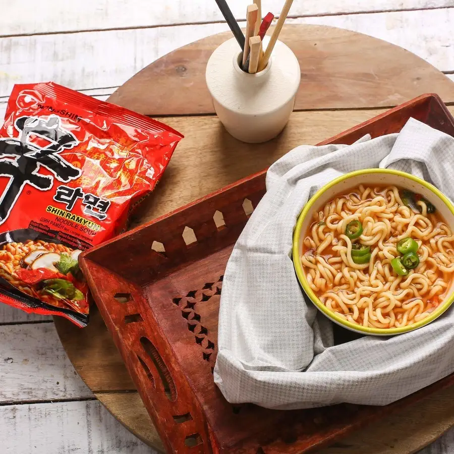
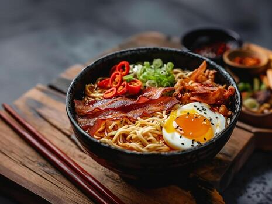

Late nights, rainy evenings, or days when nothing feels right — ramyeon is always there like a silent comfort. There’s something magical about a simple bowl of noodles turning your mood around. The warmth, the spice, and the simplicity make it more than just food — it feels like a hug in a bowl.
Preparation Time: 10 minutes
Difficulty: Easy
Be careful: Do not overcook noodles.
Slurp your stress away 🍜